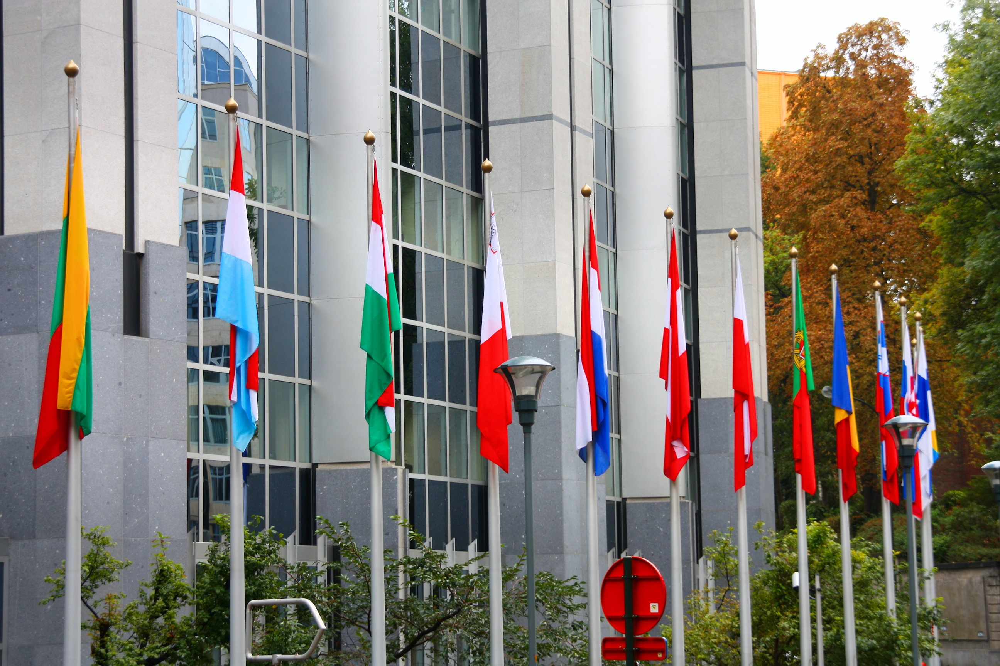

Узбекистан и Европейский союз: Соглашение о партнёрстве и сотрудничестве (1996) и первые годы
В первые годы независимости Узбекистан заложил основы официальных связей с Европой. От меморандума 1992 года до Соглашения о партнёрстве и сотрудничестве, подписанного во Флоренции в 1996 году — даты и факты первой европейской дипломатии.

После обретения независимости в 1991 году Узбекистан начал устанавливать отношения не только с соседями и крупными державами, но и с Европой. Вершиной этого процесса стало Соглашение о партнёрстве и сотрудничестве (PCA), подписанное в 1996 году, которое долгие годы оставалось основным правовым документом отношений Узбекистана и ЕС (Источник: Совет ЕС — Consilium; Gazeta.uz).
Первые шаги: 1992–1994
Отношения развивались постепенно. В 1992 году Узбекистан подписал меморандум о взаимопонимании с Европейским экономическим сообществом (предшественником ЕС). В 1994 году Узбекистан установил официальные дипломатические отношения с новообразованным Евросоюзом (Источник: Gazeta.uz; документы делегации Европарламента).
Флоренция, 21 июня 1996 года
Соглашение о партнёрстве и сотрудничестве было подписано 21 июня 1996 года во Флоренции (Италия). Это «смешанное» соглашение между Европейскими сообществами и их государствами-членами, с одной стороны, и Республикой Узбекистан — с другой. Первоначально оно было рассчитано на десять лет (Источник: Совет ЕС — Consilium; EUR-Lex).

Что охватывало соглашение
PCA устанавливало политический диалог и охватывало торговлю, вопросы инвестиций и сотрудничество в широком круге гражданских сфер. Согласно официальным текстам, соглашение было призвано поддержать независимость и суверенитет Узбекистана и его усилия по укреплению демократии, развитию экономики и завершению перехода к рыночной экономике (Источник: CORDIS; Совет ЕС).
1 июля 1999 года: вступление в силу
Поскольку его должны были ратифицировать все государства-члены, соглашение вступило в силу спустя несколько лет — 1 июля 1999 года. В этот период торговлю и экономические связи регулировали промежуточные договорённости и программы техпомощи (в том числе TACIS) (Источник: EUR-Lex; Gazeta.uz).
Дальнейшие этапы
PCA послужило фундаментом. Позже ЕС принял первую стратегию по Центральной Азии (2007), открыл делегацию в Ташкенте (май 2011; первый глава — Норберт Юстен, 2012) и оказывал финансовую помощь. Эти отношения впоследствии развились к Расширенному соглашению (EPCA), но их исторический корень — именно Флорентийское соглашение 1996 года (Источник: Gazeta.uz; Wikipedia).